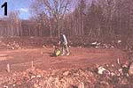

Rob Roy's Earthwood Home
Building a house from cordwood masonry, including fuel savings from earth sheltering, insulation and the floating slab.
April/May 1995
Visitors shake their heads when I tell them that we are heating Earthwood, our 2,000-square-foot home near the Canadian border, for $75 this winter. It's hard to tell if they're really impressed or think I'm trying to pull the wool over their eyes. But I really get their interest when I explain further that the house maintains a steady temperature, summer and winter, with no "spikes" in the temperature curve. North Country folks are used to waking up to a chilled home on subzero winter mornings.
There's no magic involved, and no attempt at deceit. Earthwood's performance is the result of employing several design characteristics not usually combined in American homes: a round shape, earth sheltering, cordwood masonry, solar orientation, and a 23-ton wood-fired masonry stove. And the cost? About $27,000 total, including labor and materials. Grudgingly, I admit that $6,500 of this figure went toward hired help; otherwise, my wife Jaki and I did the work ourselves. And $5,000 of the $27,000 represents the value of materials donated by manufacturers for field-testing purposes, but I've included them to give a true idea of cost. In 1995, an Earthwood-type home can be built for a materials cost of about $15 per square foot.
A Round House
The other building species (birds, bees, beavers, etc.) know instinctively that a round house is the most economical to build and the easiest to heat. Backed by millions of years of experience, a course in geometry would be wasted on animal architects. Same with so-called primitive man. Where materials are scarce and time is at a premium, it does not occur to many tribes to build any shape other than round. A round house encloses 27.3% more space than the most efficient rectilinear house, which is square. But Americans don't even build square houses anymore. Typically, the American home is twice as long as it is wide, and a round house enjoys a space percentage gain of 43% compared to such a rectangle! The same amount of time, materials, and labor (particularly when building with masonry units) yields a home that has 43% more space. And, when heat loss through skin area is considered, it's approximately 43% easier to heat on a per-square-foot basis.
The outside diameter of Earthwood is 38'8". With 16" thick walls, the inner diameter of 36' yields a usable internal area of 1,018 square feet on each of the two stories, just over 2,000 square feet total.
Earth Sheltering
But a 43% savings, while substantial, doesn't account for a $75 fuel bill. Our house is built near Plattsburgh, N.Y., with a heating season of 8,500 degree days. As we're 1.200 feet higher than Plattsburgh, we experience 9,000 degree days. (Compare Washington, D.C., for example, at 4,000 annual degree days or Memphis at 3,000). But, by earth sheltering the home, we can effectively change the "climate" just outside the fabric of the building. Let's say its -20°F outside. At 6' of depth, the earth is about 40° in winter, so our ambient temperature just outside the house fabric-again, think of climate-is 60° more favorable than a home built above grade. In effect, going 6' down is the equivalent of moving the home nearly 1,000 miles south!
Our south side is not earth sheltered at all, to take advantage of solar gain and to maximize light; but the earth berm on the north of the two-story home is 13' deep, so we have an average of 6' of earth sheltering around the home, plus an 8"-deep earth roof. Fuel savings are compounded.
Cordwood Masonry
Sixty percent of Earthwood's cylindrical walls are above grade, without the earth-sheltering advantage. Here, we employed a low-cost and energy-efficient means of construction, our old friend cordwood masonry, featured many times over the years is MOTHER. For those who came in late, cordwood construction consists of building very thick walls of "log ends" laid transversely, as a rank of firewood is stacked. The wall derives exceptional thermal characteristics from the special insulated mortar matrix woven around the logs. The insulation value of our 16" cedar cordwood walls is about R19, which-I know-doesn't sound all that spectacular. In fact, it's the minimum code requirement in our area. But what is spectacular is the tons of mass of the walls-mortar and wood-not found in a stick frame home. And half of the mortar's mass is placed on the inside of the sawdust insulation at the center of the mortared portion of the wall. This "thermal mass" helps take the home through the highs and lows of the outside temperature fluctuations.
Insulation and Thermal Mass
Manufacturers are always going on about the R (insulative) value of their products, but hardly anyone talks about the equal importance of thermal mass, the ability of a material to store heat. You see, there's no profit to be made from a pound of stone or a gallon of water. Now, the best approach is to combine good insulation value with thermal mass by correctly placing the insulation on the cold side of the mass. By this method, the stored heat of the mass, instead of being rapidly conducted to the exterior of the building, is given off into the home itself to replace heat loss through the building's fabric. So, with underground housing, at least in the north, the concrete slab foundation is poured over an inch or two of extruded polystyrene insulation-such as Dow Styrofoam Blueboard. Likewise, the concrete or concrete block walls have rigid insulation placed over the waterproofing membrane. Now, the concrete fabric of the building acts as a tremendous capacitor, or heat-storing mass. If the insulation is placed on the interior of the home, the value of this thermal mass is lost. The fabric of the building, thermally, just becomes a part of the earth. What a wasted opportunity!
Solar Orientation
The Greeks knew 2,500 years ago that any home-whether intelligently designed or not-will be up to 35% more energy efficient if it is oriented with regard to solar gain. Yet a town near us has a planning ordinance that says that houses must be built "parallel to the road." If the road doesn't happen to run in the right direction, such an ordinance might be increasing residents fuel bills 35% each year. In any case, Earthwood's round shape throws the ordinance for a loop. No matter what way you face it, it's "parallel to the road." Well, tangent, anyway.
The important thing is that we concentrated the double-pane windows on the southern exposure for solar gain. In fact, the solar room downstairs, which faces exactly south, helps to heat the home on a sunny sub zero day.
The Masonry Stove
The 23-ton, round, stone masonry stove at the heart of Earthwood burns wood about 35% more efficiently than most ordinary woodstoves, another percentage to factor into the equation. The wood is burned hot and fast, so combustion of wood gasses is near perfect. No creosote and very little pollution. The stove is safe and en vironmentally friendly, but the greatest advantage is the tempering influence of 23 tons of thermal mass that can give up its heat only to the home's interior, not directly to the outside. It grieves me to see so many masonry chimneys fastened, to the outside of the gable end of a house. It may look pretty for the neighbors, but it's an energy disaster. Put that beautiful stone masonry inside the home with you, where it can warm your body and your heart.
Build it Round
The typical home's rectangle design is 43% less space efficient than a
circular one.
Burning "Waste" Wood
All these design details compound efficiencies tremendously. But $75? "Give me a break!" I can hear thousands of readers saying. Stay with me. Over 14 years, careful measurement of our fuel (wood) consump tion reveals that Earthwood requires 3 1/4 full cords of wood per heating season. And the house stays at a steady comfortable temperature. In the summer of 1994, I bought 3 1/3 full cords of hard maple slabs cut into 4' lengths, the waste product of a local sawmill that makes rail ties and other squared hardwood blocks. The cost was $12 per cord ($40 total), plus $30 for delivery. I cut the slabs to 16" lengths for about $5 worth of chainsaw gas and oil, thus my fuel cost is $75. And the thin slab wood is the perfect size of stick to burn hot and fast in the masonry stove. As I write these words, I am warmed by wood that was burned in the stove yesterday. Despite unspringlike temperatures and a strong wind outside, we have not fired a stove today. The home's residual heat combined with the solar gain keep us nice and toasty.
Many Earthwood homes have been built all over North America using the techniques that we have developed over the past 20 years. Let's look at some of the more unconventional techniques in detail.
The Floating Slab
Building on coarse sand or gravel will allow the foundation to "float" through frost heaves.
Floating Slab
Earthwood is built on a "floating slab," which, incidentally, was Frank Lloyd Wright's favorite foundation system. Although most of the home's perimeter is well below grade and does not require frost protection, the front portion of the home, including the solar room, might be subject to frost heaving, that nasty situation where water in the earth freezes, expands, and "heaves" the building upwards, causing structural damage. The common "solution" is to try to outguess the frost depth. The Plattsburgh, N.Y., building department, for example, requires all foundations to be at least 4' deep. The floating slab, however, takes another approach. The slab "floats" upon a "pad" of good percolating material, such as coarse sand, gravel, or crushed stone, which does not hold water. No water to freeze equals no frost heaving.
The details: Build on undisturbed earth. Scrape the organic material (topsoil, vegetation) to the edge of the site with a bulldozer. Keep this valuable material. It will be your roof later on. Now, build up a pad of percolating material to a height of about 16". At Earthwood, we spread sand in runs (layers) of about 6" each, then we watered and compacted each run in both directions with a hired power compactor. Three such runs were compacted to a pad about 16" thick.
The concrete footings at Earthwood are 9" thick and 24" wide, with two continuous rings of #4 (1/2") reinforcing bar (rebar) supported about 3" off the bottom of the footing track on clean broken bricks. Prior to pouring, the footing tracks are lined with an inch of Dow Styrofoam Blueboard, which will take a compression load of 5,600 per square foot with only 10% deflection. (The Earthwood walls weigh "only" about 2,000 per square foot, well within the Blueboard's support capability.) The insulation is very important in northern climes. Without it, there is a direct and rapid conduction of heat through the footings to the comparatively cold earth; condensation will occur where the block wails meet the floor. At Earthwood, we have experienced no such condensation.
Using 82 cubic yards of 3,000-poundtest ready-mixed concrete, we poured the wall footings and the central mass (masonry stove) footings. Although it is possible to pour the footings and the concrete slab floor on the same day-called a "monolithic slab"-we chose not to do this. There are a lot of different kinds of preparation required for each pour, and at least a truckload of concrete is required each time, so there is really no advantage in pouring footings and floor at the same time. In fact, the concrete footings provided an excellent guide for pouring and screeding the 4" floor a week later.
Some of the preparations required prior to the floor pour are: installing any under floor plumbing and electrical conduit, installing 1" of extruded polystyrene rigid insulation, and laying down the wire mesh reinforcement. An insurance technique of my own is to snake a 4" perforated drain throughout the sand pad to carry any under slab water away. This drain should terminate above ground, someplace downgrade from the pad. As the concrete is poured, a designated "wire-puller-upper" keeps pulling the mesh up into the concrete. The tines of a rake work well for this. The mesh holds the concrete together when it cracks.
The wet concete is flattened with a long screed board made from a straight two-by-six. I fasten wooden handles to the screed board to make pushing and pulling easier. Next, the floor is "floated" with a bull float with extension handles. Finally, it's troweled smooth, either by hand or with a hired power trowel. Power trowels, with four rotating blades, can be tricky to operate. In fact, I always hire a contractor friend to take charge of the whole pouring process. I let him tell me and my press gang what to do. It's worth it.
A concrete floor can be finished in many ways: ours are surfaced with roofing slates, with some floors painted. Throw rugs or mats can soften the floor somewhat. My son Rohan's room has fitted carpet, although the insulation value of the carpet and pad is bound to diminish the heat absorption into the thermal mass a bit. If you've shopped in a modern mall, you know that a concrete floor can be hard on the back and spine. For this reason, our house is designed so that most of the daily activity takes place upstairs, on a spruce plank floor. The two boys have their bedrooms downstairs, and there's a wood store, den, pool table room, and storeroom on that level.
Surface-Bonded Blocks
The walls below grade at Earthwood are built of 16" concrete corner blocks, laid transversely in the wall, much like the log ends of the cordwood masonry. Corner blocks have flat ends; they're nor scalloped like common blocks. The first course of blocks is set in mortar just to establish a good level base course. If care is taken to set these first blocks nice and level, the rest of the block work is a breeze, because no further mortaring is required by the surface-bonded method. The blocks are stacked dry, with just the occasional thin metal shim employed to keep things level or to take a wobble out of a block. The great strength of the wall comes from the application of a 1/8" coating of surface-bonding cement, applied with a flat plastering trowel to each side of the wall. This material, manufactured by several different companies throughout the U.S., gets its strength from the millions of glass fibers that permeate the predominantly Portland cement mixture. The tensile strength-resistance against lateral load, in this case-of a surface-bonded block wall has been found to be about six times stronger than that of a conventionally mortared wall. Mix and apply the cement according to the manufacturer's instructions. It takes a little while to get used to applying the 1/8" layer uniformly, but it is a lot easier-and stronger-than mortaring the blocks in the traditional way. And, the surface-bonded wall makes a great base to which a waterproofing membrane can be applied to the exterior or paint to the finished interior.
With our 36' internal diameter, the effect is that of a truly curved, round white wall. The curve is so gradual that the individual blocks can't be seen. The wall is quick and easy to build, superstrong, light and bright below grade (where light is at a premium), and has phenomenal thermal mass to help maintain steady temperatures: warm in winter, cool in summer.
Will It Last?
Not one of the cordwood walls I've built has ever decayed in any way. They should last a century.
Cordwood Masonry
Above grade, the Earthwood walls are composed of cordwood masonry and plenty of windows for light and solar heat gain. The technique is so elegantly simple that children, grandmothers, and beavers can (and have) all made good use of it. The masonry units are short-typically 12" to 24"-logs that we call "log ends." The log ends at Earthwood are 16" long, most of them cut from old recycled cedar fence rails. Your log ends should be debarked, because insects love that space between the bark and the epidermal layers of the wood.
Haven't got old fence rails? Use what you've got. I don't know of any wood that will rot out when used as log ends, provided it has been debarked and it has no deterioration to begin with. The secret of cordwood masonry's longevity-100 years or forever, whichever comes first-is that the wood "breathes" along the end grain, something that does not occur by other construction methods. Also, one log end never touches another, so moisture is not trapped. A cordwood wall might get drenched during a driving rain, but it soon dries out again, and the bacteria that cause rot never get a foothold.
I have never treated either side of any cordwood wall I've built-five houses and numerous out-buildings-and the walls have never experienced deterioration. As added precautions, I always make sure that I keep the first course of wood well clear (at least 6") off the ground, and I employ a substantial (16" minimum) overhang around the building.
A word about the mortar, or "mud," which holds the whole thing together. After years of research and testing, we have arrived at the following recipe (proportions are equal parts by volume, not weight): 9 sand, 3 sawdust, 2 Portland cement, 3 type S (builder's) lime. The sawdust should be softwood from a sawmill, passed through a lf" screen to remove bark and the like, and soaked overnight in an open-topped drum. The sawdust in the mix is the secret spice that prevents the mortar from shrinking. It works by storing moisture, giving it off as needed to replace that absorbed by the dry cordwood. This mortar takes four or five days to fully cure, instead of one or two without it. Retarding the set in this way protects against shrinkage and cracking. Thoroughly mix the ingredients with enough water to give a "wet snowball" consistency. Not crumbly. Not soupy.
The cordwood construction procedure is simple: (1) Lay down a double bed of mortar, an inch thick and about 4" wide for a 16"-thick wall. (2) Fill the space between the mortar beds with loose fill insulation, such as vermiculite or perlite. I actually use sawmill sawdust, treated with lime at the rate of about 1/12 part lime, well mixed in with a hoe. Sawdust has been found to be equivalent to fiberglass in insulation value, a little over R3 per inch. Incidentally, fiberglass is not recommended as insulation between the mortar joints of a cordwood wall: if it gets wet, it may mat down and not fluff up again. If the lime-treated sawdust gets wet, it sets up like rigid foam when it dries out, still excellent insulation that completely fills the voids. (3) Lay the log end in the wall with a gentle pressure. The 16" log end establishes the width of the wall. (4) Subsequent courses follow the same pattern: mud, insulation, cordwood, except now you are following the hills and valleys established by the first course. It's really quite therapeutic. (5) Before the mortar gets too stiff to work, we "point" (or grout) the wall with a stainless steel knife made from an old kitchen butter knife which has had its last inch of blade bent to about a 30° angle. A firm pressure smooths the mortar nicely. Pointing makes the wall stronger, more beautiful, and much less porous. I think that pointing makes the difference between a good wall and a great wall. Jaki and I like to recess the pointing 1/4" to 1/2" back from the wood, for the sake of a pleasing masonry texture.
Cordwood masonry is labor intensive but low in cost. And consider how many jobs are being accomplished at once. A cordwood wall provides: structural support for the roof, insulation, interior and exterior finish, and-the bonus not found in most other walls-usefully positioned thermal mass. The appearance is unique, combining the aesthetics of good stone masonry with the pleasing warmth of wood. When you consider all the layers that go into a stick-frame house (framing, insulation, vapor barrier, Sheetrock, tape, spackle, two coats of interior paint, exterior sheathing, house wrap, siding, two coats of stain, etc.), well ...cordwood comes out pretty well. And the on-cost (maintenance) is practically nil. Our only "maintenance" of Earthwood's cordwood walls has been the occasional caulking around large log ends with a clear, silicone-based caulk. Wait a year or two after building, you'll only need to do this once.
Post-and-Beam Octagon
Earthwood has a strong octagonal internal post-and-beam frame, situated halfway between the external walls and the central stone mass. This frame is necessary to create internal spans short enough to support the heavy earth roof. The floor plan makes use of these beams, too.
Internal walls rise up to meet the underside of the heavy girders, greatly simplifying internal wall finishing. The first floor joists, as well as the heavy (mostly 5" x 10" pine) rafters, are supported by the external walls (cordwood or block) at their outer ends, the masonry mass at the center, and the octagon post-and-beam frame halfway between. This is called a radial rafter system. Actually, only half of the 32 rafters or joists go all the way to the center. Sixteen of them stop at the octagon. The architect-stamped Earthwood plans are engineered to support the 150 pounds per square foot load of a snow-laden and saturated 8" earth roof.
(1) Stone heat sink: 4' diameter upstairs, 5' diameter downstairs.
(2) 16" cordwood masonry wall.
(3) Post locations, seven in all.
(4) Girders, 8" x 8" best Douglas fir or equivalent.
(5) Special girder, 10" x 12" clear oak or equivalent (spans 15').
(6) Primary rafters, 5" x 10" red pine or equivalent for floor joists (4" x 8").
(7) Secondary rafters, 5" x 10" red pine or equivalent for floor joists (4" x 8")
(8) 2" x 6" tongue-and-groove planking.
(9) 2" x 6" plates. S= Special rafters for greater spans, 6" x 10" red pine or equivalent. Floor joists at these locations can be 4" x 8".
Waterproofing the Walls
While there are a variety of good waterproofing membranes on the market, my choice for cost, quality, and ease of application is a rubberized asphalt membrane with a polyethylene top surface, such as the Bituthene 3,000 waterproofing membrane made by W.R. Grace and Co. Similar membranes are manufactured by several other companies, and are commonly used to prevent ice damming on the eaves of shingled roofs.
Application is quick and easy. For maximum adhesion, the wall is primed with a compatible primer made for the purpose. Within a half hour, the 3'-wide membrane can be applied. A nonstick backing paper is removed while the very sticky rubberized asphalt membrane is pressed onto the wall with a roller or the heals of your hands. Application is vertical, with the second sheet lapping the first by 3" to 6", depending on the membrane selected. The membrane, which comes in a long roll, is easily cut with a razor knife. Factory edges have their own mastic attached to prevent "fish mouthing" (raising up) of the edges. A fresh cut can be protected in the same way by the application of a bead of compatible caulking. It's really that quick and easy.
Drainage
At Earthwood Building School, we always say, "Drainage is the better part of waterproofing." Give the water an easier place to go than into your home and it will.
Backfill material must have good percolation: coarse sands and gravel, crushed stone, etc. Don't backfill with fine silts and clays, which will hold the water next to the home. Eventually, even the best waterproofing might fail. Next to the footing, at that critical location where the block wall meets the foundation, install a good "French drain;" consisting of 4" perforated drainage tubing surrounded by plenty of crushed stone. A couple of inches of straw thrown on top of the crushed stone will compress under the weight of backfill and form a permanent filtration mat to keep the crushed stone and French drain clean. This drain carries any water away from the home to some point above grade.
(1) Stone mass/masonry stove
(2) Stone mass footing
(3) Pillar footings, seven in all
(4) 8" x 8" post
(5) 4" x 8" floor joist
(6) 8" x 8" girder
(7) 16" thick cordwood masonry wall
(8) Compacted sand/gravel pad
(9) Undisturbed earth, no organic material
(10) Special 10" x 12" clear-oak girder (or equivalent) for 15' span
(11) 5" x 10" rafter, red pine or equivalent
(12) 6" x 10" rafter for longer span, red pine
(13) 2" x 6" wall plates
(14) 2" x 6" tonge-and-groove decking
(15) W.R. Grace Bituthene 3,000 or 3,100 waterproofing membrane
(16) 10" aluminum flashing, under Bituthene, folded over planking as a drip edge
(17) 1" rigid foam as protection board
(18) 4" Dow Styrofoam insulation, or 5" EPS
(19) 6-mil polyethylene
(20) Hay or straw layers
(21) #2 crushed stone
(22) Railroad tie or 8" x 8" pressure-treated lumber
(23) 8" of topsoil, planted to grass
(24) 4" perforated flexible drain with nylon or fiberglass filtration sock
(25) 8" concrete corner block, first course bedded in mortar for leveling
(26) #5 (5/8") reinforcing bar
(27) 4" ABS plastic pipe (earth tube inlet)
(28) 1" Dow Styrofoam
(29) W.R. Grace Bituthene 3,100 membrane
(30) 2" Dow Styrofoam or equivalent
(31) Galvanized flashing cone
(32) Walk-around deck with railing
The Earth Roof
Most roofs break down primarily because of ultraviolet damage from the sun and from damage by repeated freeze thaw-cycling. With a properly constructed earth roof-with rigid foam insulation on the top side of the membrane-the waterproofing layer is permanently protected from these phenomena.
Working up from the interior, the roofing layers on top of the heavy radial rafter system is as follows: two-by-six tongue and-groove planking, Bituthene 3,000 waterproofing membrane, 4" of extruded polystyrene insulation (such as Styrofoam or U.C. Industries Foamular), a layer of 6mil black polyethylene, 2" of #2 crushed stone, a hay or straw filtration mat, and, finally, 7" to 8" of topsoil, just enough to maintain a living green cover. The black poly is a cheap insurance layer. In combination with the crushed stone, the drainage layer carries water to the edge of the home.
Such a roof is environmentally and ecologically friendly, aesthetically pleasing to virtually everyone, energy efficient (warm in winter, cool in summer), and affords uncommon protection against tornadoes, sound, and radiation. Properly built, it is maintenance free and incredibly long lasting. The only drawback, in my view, is dealing with the constant mowing the-roof jokes. "Get a goat!"
Complete details concerning cordwood construction techniques can be found in the instructional videocassette Basic Cordwood Masonry Techniques: A Video Workshop (88min., $39.95) and Rob's two books, Complete Book of Cordwood Masonry House building: The Earthwood Method (Sterling, 1992), and The Complete Book of Underground Houses: How to Build a Low Cost Home (Sterling, 1994). All are available from MOTHERS Bookshelf (1-800-888-9098) on pages 89-91, along with a variety of other building references and resource books.
Rob Roy is Director of Earthwood Building School, 366 Murtagh Hill Road, West Chazy, NY 12992. The school, founded in 1980, offers instruction and workshops in cordwood masonry and underground housing across the country.
|
Rob at work on a cordwood masonry |
Two Thousand Square Feet for $27,000 . . . and a $75 Fuel Bill! |
 The sand pad is compacted in three runs of about 6"" each. |
 Footings are 9"" deep by 24"" wide; #4 rebar is supported by broken blocks. |
The 16' screed board spans from the perimeter footings to the 7' diameter masonry stove foundation. This shows Insulation, mesh, and footings. |
Sixteen rafters go all the way to the stove; the others stop at the octagon. |
|
Then, tie the inner and outer beds together with log ends. Repeat. |
Pointer Jaki Roy uses a stainless steel butter knife to smooth the mortar. |
Dry stack corner blocks (8"" x 8"" x 16"") like cordwood in the bermed wall. |
|
Using a trowel, apply surface bonding cement to a dampened wall. |
Place waterproofing membrane vertically on the bonded walls. |
The French drain is made of perforated flexible tubing. |
|
The octagonal post-and -beam frame cuts the radial rafter spans in half. The masonry stove acts as a load-bearing column at the center of the home. |
The masonry stove is 5' in diameter downstairs and reduces to 4' upstairs. Flues crisscross through the masonry to increase conduction. |
|
|
We apply waterproofing membrane to the primed spruce deck. |
We place 4"" of extruded polystyrene on the top of the membrane, protecting it from the freeze-thaw cycling. |
After laying a layer of 6 -mil black polyethylene over the foam insulation, we install a 2"" crushed stone drainage layer, then straw, then 7' - 8"" of earth. |
|
|
 |
|